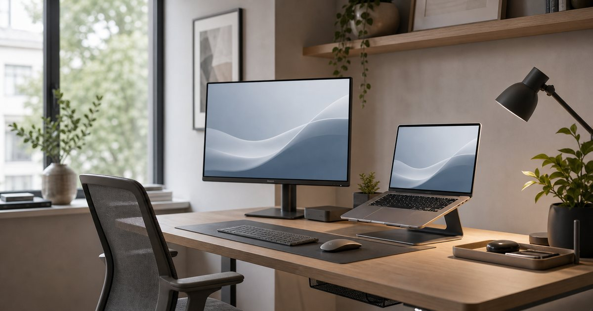

Elite Fashion｜高效率工作者的第二螢幕：外接螢幕、筆電與桌面配置怎麼選
外接螢幕不是越大越好。先判斷視窗切換、會議、文件比對與桌面收納需求，再決定螢幕、筆電與周邊配置。

先判斷你需要多一個畫面，還是多一個工作區
外接螢幕最常被誤解成越大越好。真正需要先整理的不是商品名稱，而是你每天會在哪一個動作卡住：開會、比對資料、拍攝、簡報、移動，或收納。把卡住的位置說清楚，設備選擇才不會變成看到規格就心動。
REAICE、華克電腦、SENGLI、日本橋 3C、聯威電腦與 Momax 可以放在這個情境裡比較，但角色要分清楚。編輯部會先看它們各自負責的任務：主機、螢幕、充電、聲音、拍攝、保護或收納，而不是把所有 3C 周邊混成一張清單。
先量桌深、坐姿距離與筆電位置，再決定螢幕尺寸與連接方式。常見錯誤是買了大螢幕卻沒有整理線材和筆電高度；在台灣常見的小宅書桌、共享辦公室、咖啡店與客戶會議場景裡，能否在五分鐘內坐下開工，比螢幕尺寸更早決定桌面是否成功，這些細節往往比買到更高一階規格更影響使用感。
- 先確認每天使用頻率，再決定預算順序。
- 先排除會造成麻煩的動線，再補功能型配件。
使用距離決定螢幕尺寸，不是規格表決定
螢幕尺寸要跟桌深和閱讀距離一起看。真正需要先整理的不是商品名稱，而是你每天會在哪一個動作卡住：開會、比對資料、拍攝、簡報、移動，或收納。把卡住的位置說清楚，設備選擇才不會變成看到規格就心動。
REAICE 可作為副螢幕選項，華克電腦與日本橋 3C 可放在主機和周邊採購脈絡 可以放在這個情境裡比較，但角色要分清楚。編輯部會先看它們各自負責的任務：主機、螢幕、充電、聲音、拍攝、保護或收納，而不是把所有 3C 周邊混成一張清單。
固定桌適合先看穩定性，行動工作則要看重量與收納。常見錯誤是忽略桌面深度，讓螢幕太近或太高；在台灣常見的小宅書桌、共享辦公室、咖啡店與客戶會議場景裡，租屋與小宅桌面更需要先畫出鍵盤、滑鼠、杯子和文件的位置，這些細節往往比買到更高一階規格更影響使用感。
- 先確認每天使用頻率，再決定預算順序。
- 先排除會造成麻煩的動線，再補功能型配件。
筆電高度會影響視訊與長時間閱讀
第二螢幕如果沒有搭配筆電位置，容易只是把混亂放大。真正需要先整理的不是商品名稱，而是你每天會在哪一個動作卡住：開會、比對資料、拍攝、簡報、移動，或收納。把卡住的位置說清楚，設備選擇才不會變成看到規格就心動。
華克電腦、REAICE 與 Momax 可以分別對應主機、副螢幕和充電周邊 可以放在這個情境裡比較，但角色要分清楚。編輯部會先看它們各自負責的任務：主機、螢幕、充電、聲音、拍攝、保護或收納，而不是把所有 3C 周邊混成一張清單。
先確認主螢幕、筆電、鍵盤與鏡頭的相對位置。常見錯誤是把筆電蓋起來後才發現視訊、散熱和收音都要另買；在台灣常見的小宅書桌、共享辦公室、咖啡店與客戶會議場景裡，遠距會議和文件工作常常同時發生，筆電不能只是被隨手推到旁邊，這些細節往往比買到更高一階規格更影響使用感。
- 先確認每天使用頻率，再決定預算順序。
- 先排除會造成麻煩的動線，再補功能型配件。
線材與轉接器要分固定、每日插拔與備用
桌面真正讓人煩躁的往往不是設備，而是每天重新插線。真正需要先整理的不是商品名稱，而是你每天會在哪一個動作卡住：開會、比對資料、拍攝、簡報、移動，或收納。把卡住的位置說清楚，設備選擇才不會變成看到規格就心動。
Momax、日本橋 3C、聯威電腦與 REAICE 都可以放在線材和轉接清單中 可以放在這個情境裡比較，但角色要分清楚。編輯部會先看它們各自負責的任務：主機、螢幕、充電、聲音、拍攝、保護或收納，而不是把所有 3C 周邊混成一張清單。
把線材依使用頻率分區，固定線藏好、常用線放在伸手可及處。常見錯誤是買了多孔轉接器卻每天還是找不到線；在台灣常見的小宅書桌、共享辦公室、咖啡店與客戶會議場景裡，共享辦公和咖啡店工作更需要一個小型線材包，固定桌則適合做桌後收線，這些細節往往比買到更高一階規格更影響使用感。
- 先確認每天使用頻率，再決定預算順序。
- 先排除會造成麻煩的動線，再補功能型配件。
桌面要留白，效率工具不能全擺上來
高效率桌面不等於設備最多的桌面。真正需要先整理的不是商品名稱，而是你每天會在哪一個動作卡住：開會、比對資料、拍攝、簡報、移動，或收納。把卡住的位置說清楚，設備選擇才不會變成看到規格就心動。
SENGLI 的生活小家電與 Momax 周邊適合放在最後補強 可以放在這個情境裡比較，但角色要分清楚。編輯部會先看它們各自負責的任務：主機、螢幕、充電、聲音、拍攝、保護或收納，而不是把所有 3C 周邊混成一張清單。
先保留一塊能寫字、簽文件和暫放手機的空白區。常見錯誤是把每個漂亮周邊都放上桌，最後清潔和移動都變麻煩；在台灣常見的小宅書桌、共享辦公室、咖啡店與客戶會議場景裡，每天會碰到的空白區，比偶爾使用的設備更能影響工作節奏，這些細節往往比買到更高一階規格更影響使用感。
- 先確認每天使用頻率，再決定預算順序。
- 先排除會造成麻煩的動線，再補功能型配件。
最實用的升級順序：螢幕、支架、線材，再到周邊
如果只做一輪升級，順序比預算更重要。真正需要先整理的不是商品名稱，而是你每天會在哪一個動作卡住：開會、比對資料、拍攝、簡報、移動，或收納。把卡住的位置說清楚，設備選擇才不會變成看到規格就心動。
REAICE、華克電腦與 Momax 可作為第一輪的螢幕、主機與充電思路 可以放在這個情境裡比較，但角色要分清楚。編輯部會先看它們各自負責的任務：主機、螢幕、充電、聲音、拍攝、保護或收納，而不是把所有 3C 周邊混成一張清單。
先解決視窗切換、筆電高度和充電路徑，再補音響或美化物件。常見錯誤是一開始就追求完整桌搭，結果每天都要重新整理；在台灣常見的小宅書桌、共享辦公室、咖啡店與客戶會議場景裡，採購前拍一張桌面照片，圈出最干擾的三個點，會比直接逛商品頁更準，這些細節往往比買到更高一階規格更影響使用感。
- 先確認每天使用頻率，再決定預算順序。
- 先排除會造成麻煩的動線，再補功能型配件。
FAQ
外接螢幕一定比筆電雙工更有效率嗎？
不一定。若只是短時間回信，外接螢幕未必必要；若常常比對文件、開會同時看資料或整理大量視窗，第二螢幕才比較有明顯價值。
行動工作適合買外接螢幕嗎？
要看移動頻率與包包重量。若每週都需要在不同地點長時間工作，可考慮輕量外接螢幕；若多數時間固定在家或辦公室，固定螢幕與桌面配置通常更穩。
買螢幕前最容易漏掉什麼？
最容易漏掉連接埠、供電方式、桌深與線材路徑。這些條件沒有先確認，螢幕規格再好也可能變成每天插拔的麻煩。
下一步建議
如果你想把工作桌先整理到能穩定開工，可以從第二螢幕、筆電與線材三件事開始。
重要警語
本文為一般工作桌、筆電與 3C 周邊選購情境整理，不構成效能保證或個別產品測試報告。規格、相容性、價格、活動與庫存請以商品頁公告為準。
本文含品牌／商品導購連結；若你透過部分商品連結前往選購，Elite Fashion 可能取得合作收益。本文仍以編輯判斷與使用情境整理為主，價格、規格、活動與庫存請以商品頁公告為準。